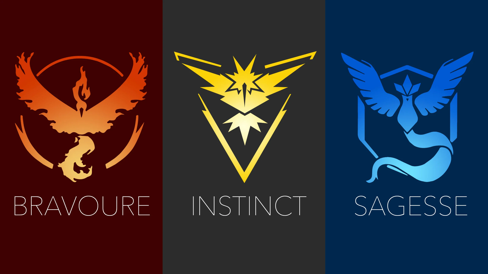

Conception :
Le 1er avril 2014, Google s'associe avec The Pokémon Company pour réaliser un poisson d'avril, lors duquel des internautes pouvaient capturer des Pokémons dans le service de cartographie Google Maps. Le jeu est un engouement mais reste éphémère, dans le contexte du 1er avril. John Hanke, de la société Niantic qui travaille à ce moment-là sur le jeu Ingress, est intéressé par le concept. Après avoir lancé sur smartphone l'application JCC Pokémon Online, The Pokémon Company et Nintendo lancent conjointement avec Niantic, ancienne filiale de Google responsable du jeu en réalité augmentée Ingress, Pokémon Go. Le projet est dirigé par Tsunekazu Ishihara de The Pokémon Company, de la levée de fonds au développement. L'ancien dirigeant de Nintendo, Satoru Iwata, a également influé sur le choix du développement mobile de Nintendo quelques mois avant sa mort en juillet 2015. Avant même de rencontrer les équipes de Niantic Labs, Ishihara a apprécié leur jeu précédent, Ingress, et veut alors transposer le même concept à l'univers de Pokémon. Lors du développement, Ishihara apporte une attention particulière pour que la franchise soit respectée, au niveau de la jouabilité notamment. Certains partenariats de Google en 2014 pour leur poisson d'avril sont réutilisés : la société ayant fait les vidéos de présentation de la blague de Google est réinvestie pour les vidéos de présentation du jeu. Le jeu est dévoilé au public le 10 septembre 2015. Le 22 décembre 2016, le jeu est disponible sur Apple Watch.
Système de jeux :
Pokémon Go est un jeu en réalité augmentée. Le joueur dirige un avatar, dont il peut personnaliser l'apparence et la tenue à la création de son compte, sur une carte des environs utilisant la géolocalisation du joueur. Celui-ci doit ainsi se déplacer avec son téléphone pour se déplacer dans le jeu. Le joueur peut, sur son téléphone, observer à une certaine distance les environs, ce qui permet d'afficher les différents éléments du jeu à portée : Pokémon, PokéStops et arènes. Il peut ainsi parcourir le monde, capturer des Pokémon ou encore combattre dans des « arènes ». Contrairement aux autres jeux de la licence, le joueur n'a pas à combattre les créatures qu'il rencontre. Lorsque le joueur appuie sur un Pokémon visible sur la carte, le jeu passe dans un mode où le joueur peut lancer des Poké Balls afin d'attraper la créature. Le joueur peut rater son tir ou le Pokémon s'échapper (et éventuellement fuir), nécessitant fréquemment plusieurs Poké Balls lors d'une rencontre. Une fois le Pokémon attrapé, le joueur en devient le propriétaire et se voit attribuer de la poussière d'étoiles et des bonbons. Ces deux objets permettent de rendre les créatures plus fortes, en augmentant leurs points de combat (PC). Les bonbons permettent également de faire évoluer le Pokémon, ou un autre de la même espèce. Le joueur peut également transférer le Pokémon au professeur afin de gagner un bonbon supplémentaire et faire de l'espace dans son sac. En effet, le joueur a un nombre limité de Pokémon dans son sac. Les buts du jeu sont soit de capturer chaque espèce de Pokémon existante, afin de remplir le Pokédex, encyclopédie recensant les créatures connues. (Certains Pokémon ne sont cependant accessibles que via des événements spéciaux organisés par Niantic, des raids ou par évolution), et/ou de devenir le meilleur dresseur en montant une équipe de plusieurs Pokémon pour combattre d'autres dresseurs dans la ligue combat go (ligue classée de combat multijoueurs ou chaque joueur a droit à 3 Pokémon pour combattre) ou pour conquérir des arènes et faire de son équipe la meilleure (le joueur peut choisir entre 3 équipes, les bleus, les rouges ou les jaunes à partir du niveau 5 pour avoir droit de conquérir des arènes. Battre une arène permet d'y placer un Pokémon pour donner à l'arène la couleur de son équipe et pour gagner des poképièces qui est la monnaie virtuelle du jeu une fois le pokémon vaincu après un certain temps passé dans l'arène). Une journée communauté est habituellement organisée chaque mois (un samedi ou un dimanche), où un Pokémon apparaît beaucoup plus fréquemment ainsi qu'une version chromatique (une version rare du pokémon avec une couleur différente convoitée par les joueurs). Le 27 aout 2020, le jeu offre un nouveau type d'évolution à certains Pokémon : les Méga-Évolutions. Ce type d'évolution est temporaire et doit être fait avec des Méga-Énergie, il permet au Pokémon choisi de se voir augmenter ses pc et sa forme changer.
Equipes :
Il existe dans Pokémon Go trois équipes qui disposent chacune de leur spécialité :
-

- l’équipe Jaune - Intuition ;
- l’équipe Bleu - Sagesse ;
- l’équipe Rouge - Bravoure.
Fait divers :
En France, aux États-Unis et au Japon, la presse a fait l'écho de faits divers impliquant des joueurs de Pokemon Go, en particulier des accidents de la circulation causés par des conducteurs jouant au volant de leur véhicule.
Interdiction de jeu :
Plusieurs instances gouvernementales déconseillent à leurs armées de jouer à Pokémon Go : l'Iran via son Haut conseil du cyberespace, est le premier pays à interdire le jeu en évoquant des problèmes liés à la sécurité nationale. L'analyste Alireza Al-Davoud justifie l'interdiction en déclarant que « ces jeux peuvent devenir un moyen pour diriger des missiles guidés et même causer des problèmes aux ambulances et aux pompiers ». L'Indonésie, par la voix de son ministre de la Défense, interdit le jeu à ses policiers et militaires, sous prétexte que « l'espionnage peut s'effectuer sous différentes formes ». Considéré comme « une source pour la collecte d’informations », le jeu est également interdit dans l’enceinte des bases militaires de l'armée israélienne et l'armée finlandaise. L'armée thaïlandaise interdit à ses militaires et personnels de renseignement de jouer à ce jeu. Quant à l'armée canadienne, elle ne bannit pas le jeu mais dissuade ses soldats de jouer à Pokémon Go dans l'enceinte de ses bases. En France, l'armée française et le commissariat à l'énergie atomique ont prohibé l'usage de Pokémon Go. Le 12 août 2016, le maire de Bressolles, Fabrice Beauvois, a pris un arrêté municipal interdisant « l'implantation de Pokémon sur la commune » sous prétexte notamment que l'application représente un danger provoquant « l'inattention des piétons et des conducteurs de véhicules visionnant leur téléphone ».